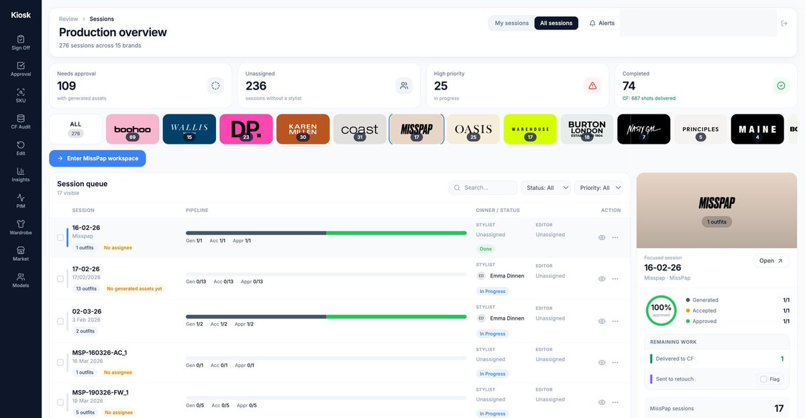
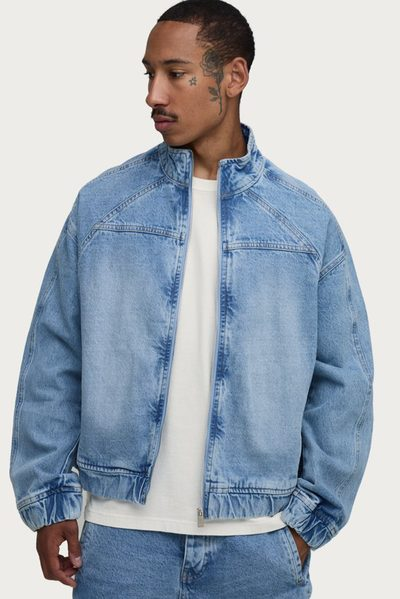
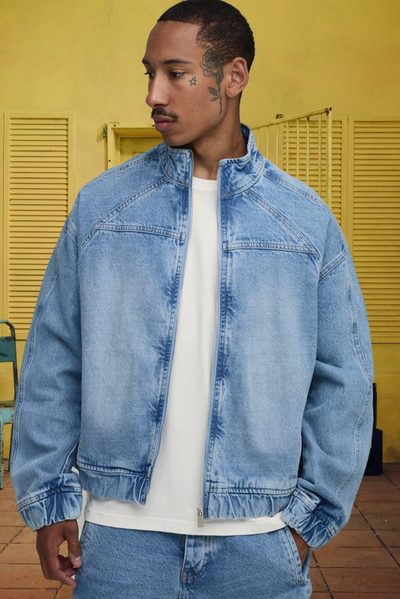
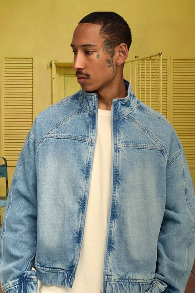
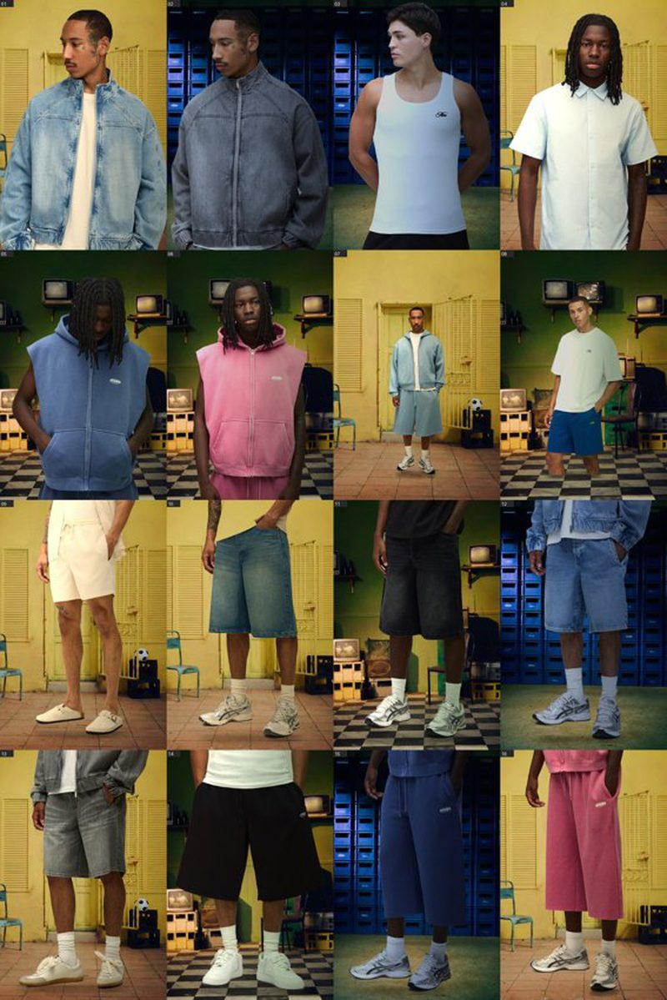

Production AI Engineer
I build the infrastructure that makes generative AI reliable at scale, and ship it to real users, not demos.
Selected Work
Case studies from production systems. Every claim traces to shipped work.
01 — PLATFORM
A virtual try-on engine serving 14 fashion brands. AI-generated on-model imagery from flat garment shots, with buyer and stylist approval workflows and automated delivery to the studio's publishing system. I build and operate it end to end.

PRODUCTION OVERVIEW — 276 live sessions across 15 brands, one operational view of generation, approval and delivery.
02 — EVALUATION
Does feeding product data into the AI generator improve the output? Before committing engineering, I ran a blind, controlled 3-arm A/B test on 37 matched garments.
03 — CREATIVE
Campaign and editorial imagery where a real model must look believably real inside an AI-generated scene. The craft is making light, scale, and shadow agree.




16 LOOKS — 4 branded rooms, real model pixels throughout, zero identity drift.
04 — INFRASTRUCTURE
A self-built agent with structured, persistent memory that compounds knowledge across sessions. The system that turns one-off fixes into institutional knowledge.
Provenance-signed, audit-chained, earned-autonomy gated. Every fact, decision, and incident stored as a typed, searchable artifact.
Principles
Reliability-first. These recur across every project.
Background
AI engineer who builds production systems, not prototypes. Over the past year, independently designed and shipped a multi-agent memory governance platform, a live algorithmic trading system, and multiple full-stack web applications; all integrating LLMs with verification layers, automated orchestration, and real-world deployment.
Background in video production and retail management across the UK and Germany brings project delivery discipline, stakeholder communication, and creative problem-solving to technical work.
English (native) · German (professional) · Yoruba (native)
Open to Production AI Engineer, AI Solutions Architect, and Full-Stack AI roles.